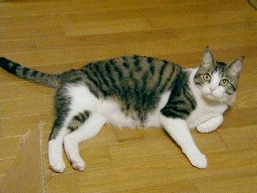

<a href="https://commons.wikimedia.org/wiki/File:%E7%99%BD%E3%82%AD%E3%82%B8%E7%8C%AB_u0704151.jpg">白キジ猫</a> © 2007 by <a href="https://ja.wikipedia.org/wiki/%E5%88%A9%E7%94%A8%E8%80%85:%E3%81%9F%E3%81%A4%E3%82%82%E3%81%A8%E3%81%A1%E3%81%BE%E3%81%8D">たつもとちまき</a> is licensed under <a href="https://creativecommons.org/licenses/by/4.0/">CC BY 4.0</a>
